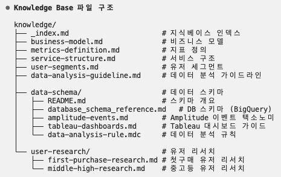
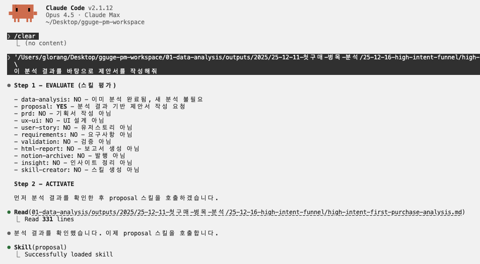
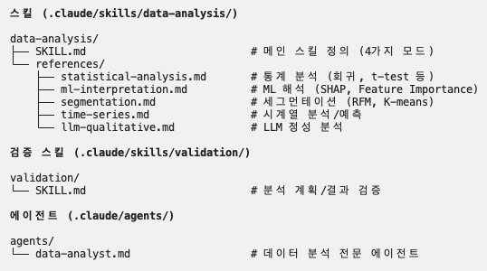

데이터 분석 세팅을 공유드릴게요
폴더에 카피만 하면 저랑 동일하게 분석할 수 있어요
준비물: 클로드 코드 세팅 + MCP 연결
(별도 세팅 방법 공유 예정)
쿼리 짜지 않고 나만의 데이터 분석 팀 돌리기
PM 업무플로우 자동화 하기
Part 1

각 단계를 클릭하면 상세 내용을 확인할 수 있습니다
database_schema_reference.mdamplitude-events.mdmetrics-definition.mdtableau-dashboards.mduser-segments.mdexecute_sql - SQL 쿼리 실행get_table_info - 테이블 정보 조회
query_dataset - 데이터셋 조회search - 이벤트 검색
get-view-data - 뷰 데이터 조회query-datasource - 소스 쿼리
기준선 대비 ±5% 오차 확인 · 세부 합계=전체 정합성 · BigQuery vs Amplitude vs Tableau 교차 검증
쿼리를 몰라도, 데이터팀이 바빠도
일관된 품질의 분석 결과를 얻을 수 있습니다
Part 2
탭을 클릭하면 프롬프트 전체 내용을 확인할 수 있습니다
각 단계를 클릭하면 사용되는 스킬과 에이전트를 확인할 수 있습니다
업무 성격 파악 → 필요 스킬 조합 → 단계별 승인 관리 → 품질 검토 자동화
좌우 버튼/A·D 키로 탐색 | 이미지 클릭 시 확대 | ESC로 닫기

초안 작성의 부담 감소, 빠진 항목 없는 체계적 문서
시각적 프로토타입으로 더 명확한 커뮤니케이션
폴더에 카피만 하면 저랑 동일하게 분석할 수 있어요
준비물: 클로드 코드 세팅 + MCP 연결
(별도 세팅 방법 공유 예정)

질문에 답하기만 하면 워크플로우가 생겨납니다!
각 Phase를 클릭하면 상세 내용을 볼 수 있어요
물어보면 더 빨리 해결책을 찾을 수 있어요
딸깍은 없습니다. 원하는 결과물을 만들기 위해 계속 조련해야합니다. 조련하다보면 더 빨라질거에요.
할 수 있을 것 같은 일에 쓰지 마세요